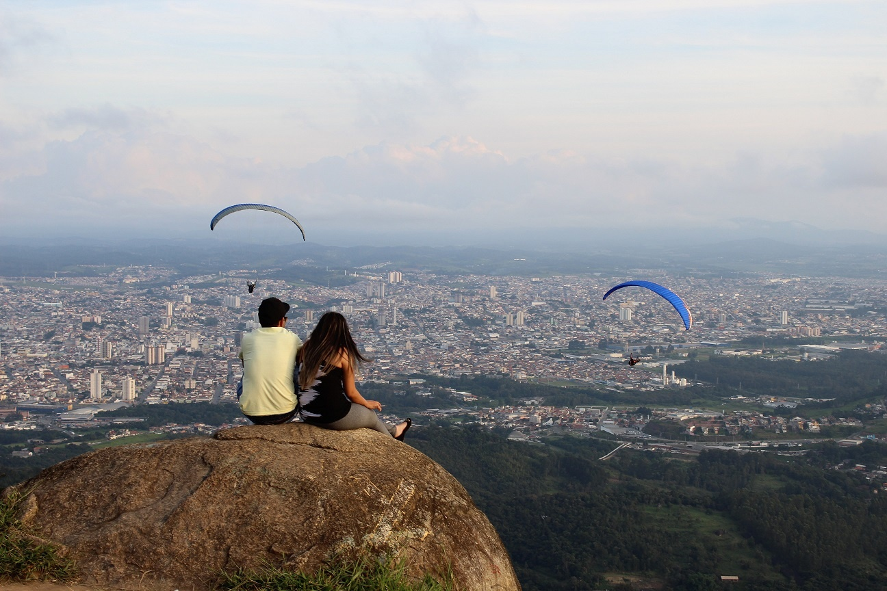
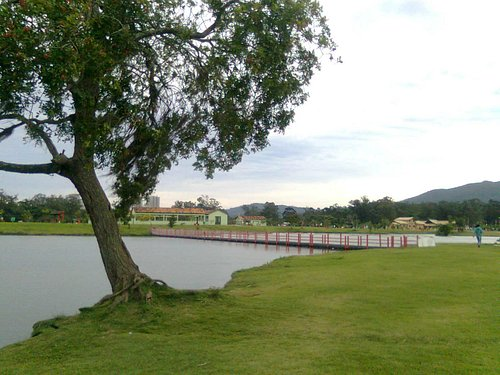
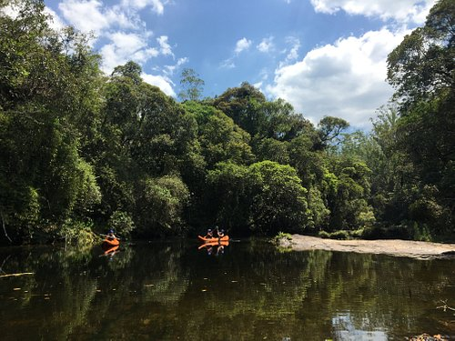
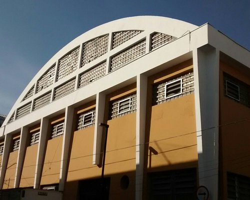
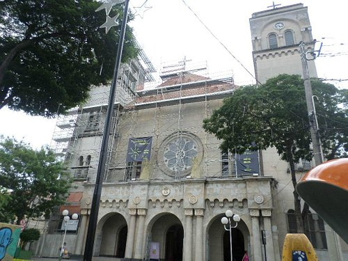

Mogi das Cruzes começou como um povoado, por volta de 1560, servindo como um ponto de repouso aos bandeirantes e exploradores indo e vindo de São Paulo, entre eles Brás Cubas. Gaspar Vaz
Guedes foi responsável pela abertura da primeira estrada entre a capital e Mogi, iniciando o povoado, posteriormente elevado à "Vila", com o nome "Vila de Sant'Ana de Mogi Mirim".
O fato foi oficializado em 1º de setembro de 1611. Em 13 de março de 1865 foi elevada à cidade, e em 14 de abril de 1874 à comarca.

Pico do Urubu

Parque Centenário

Parque da Neblina

Parque Centenário

Catedral